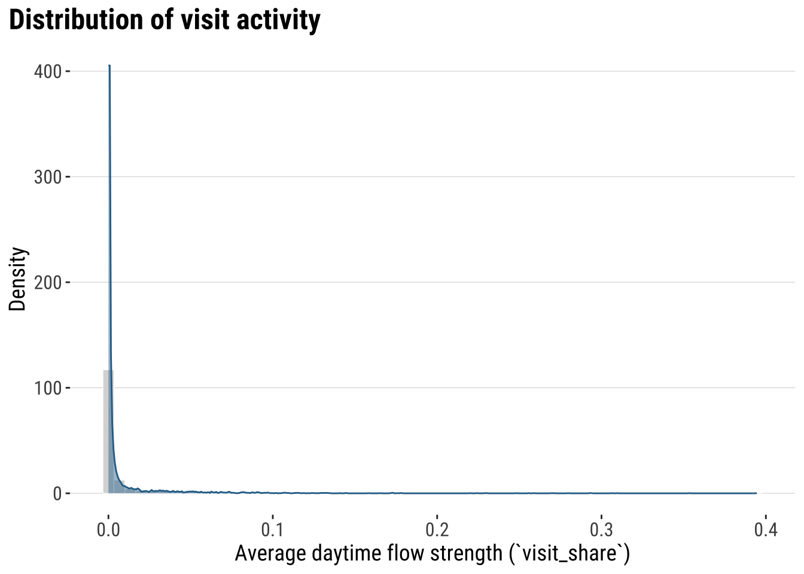
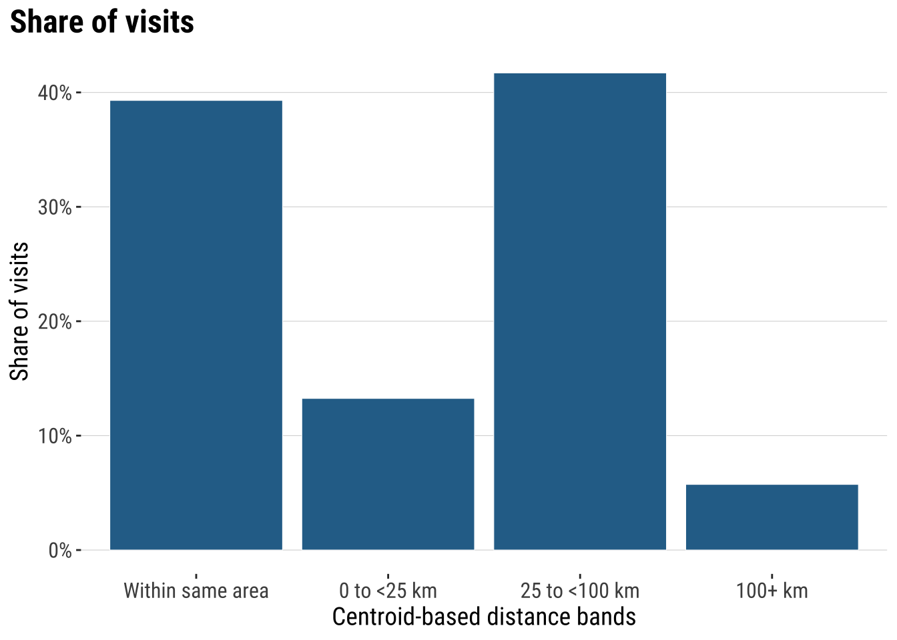
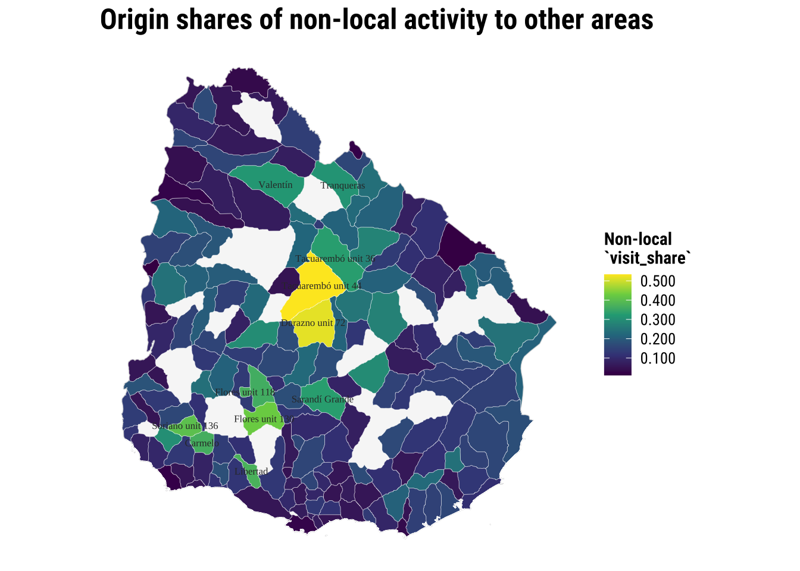
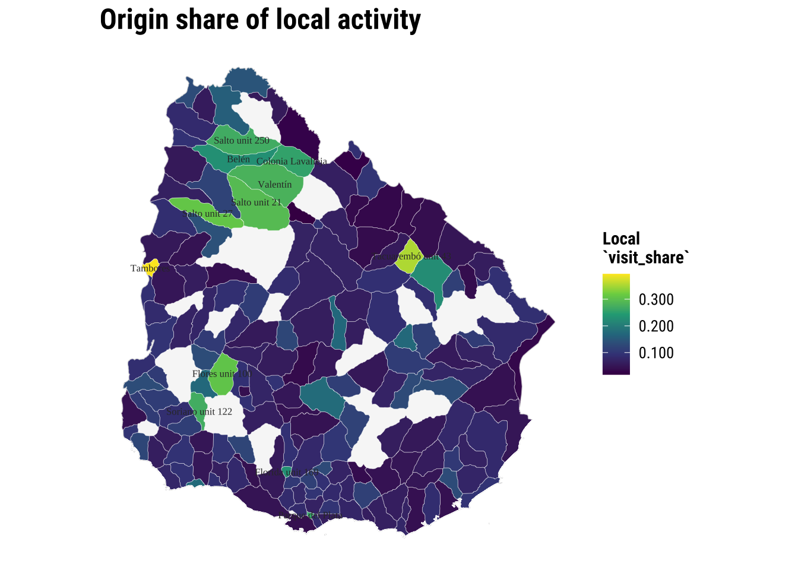
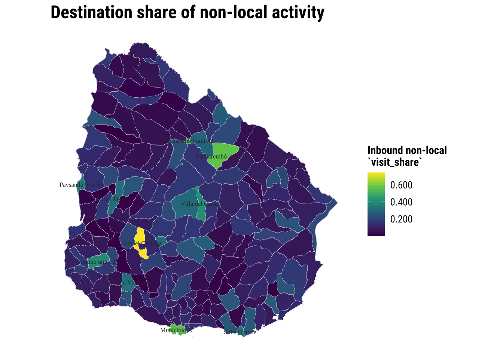
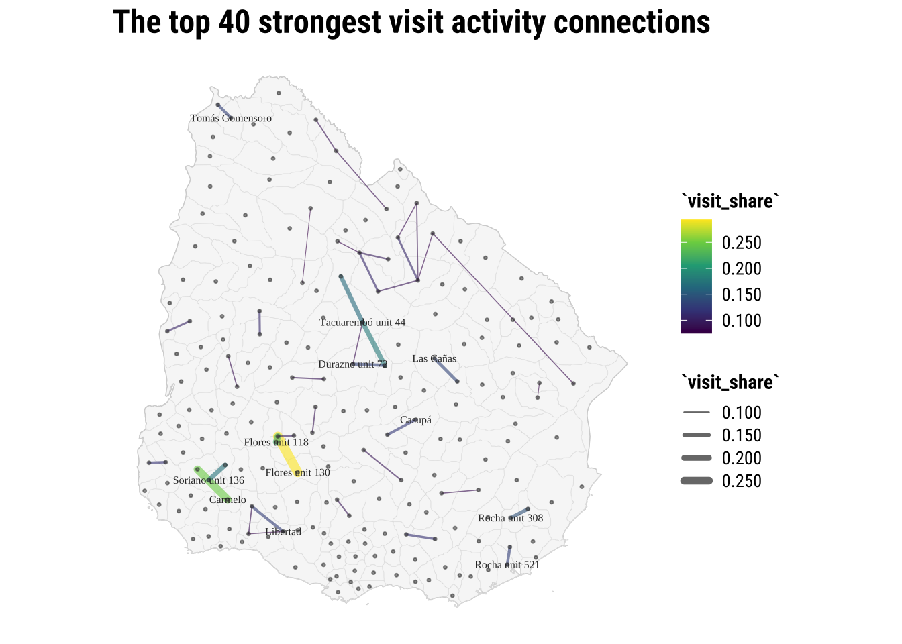
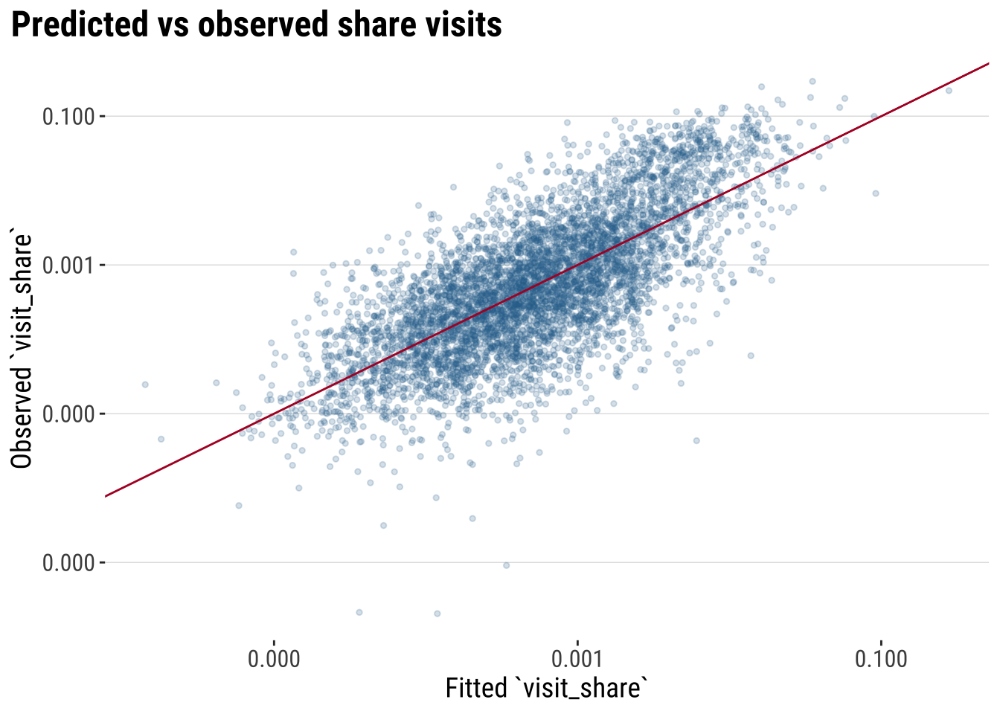
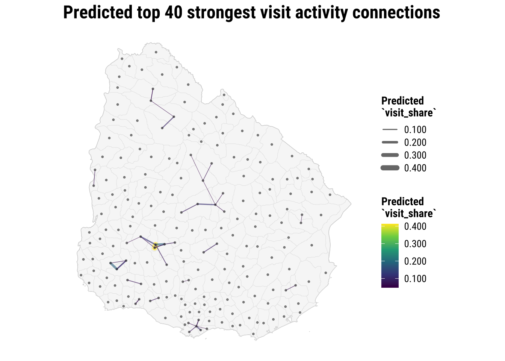

4 Spatial Interaction Modelling
This chapter introduces origin-destination thinking through activity-space flows in Uruguay. It aims to illustrate appropriate approaches to understand the structure of origin-destination (OD) data tables and model interactions between places of origin and destination. These techniques are useful to analyse and model any form of spatial interaction data capturing the intensity between a set of origins and destinations such as internal migration, commuting, trade and internet data flows (Rowe and Patias 2020; Fotheringham and O’Kelly 1989).
By the end of this chapter, you should be able to:
Describe origin-destination flow data, aggregate activity-space records into a usable OD table, and distinguish between local retention and non-local flows.
Join OD data to Uruguay ADM2 polygons and derived centroids, compute inter-area distances, and visualise the main flow structure with maps and simple summaries.
Fit and interpret a simple gravity-style spatial interaction model in R, assess its fit, and use it to generate basic flow predictions.
4.1 Dependencies
4.2 Data
We use Meta’s activity-space data on the places that Facebook users tend to visit from where they live. The file used here is a Uruguay-only subset of a larger export. Each raw row links a home area to a visited area and reports a visit_fraction. In this chapter, visit_fraction is the raw flow-strength variable in the downloaded file. The release contains records for one date and distinguishes between daytime and nighttime activity spaces.
An important detail is that the original data reports repeated observations for an OD pair. The same home_gadm_id and visit_gadm_id can appear various times because multiple fine-grained observations are mapped into the same GADM polygons. As a result, the raw row count is larger than the number of distinct polygon OD pairs. For our purposes, we will focus on analysis at the ADM2 level and daytime patterns. We therefore filter to daytime only and then aggregate repeated rows to one OD record per origin-destination pair using the average raw visit_fraction. In the aggregated table, that average is stored in a new column called visit_share. We will do this data transformation in the next section.
Ensure you understand all the data files we are processing.
activity_path <- "data/fb-activity-spaces/activity_space_distributions_20260209_t_to_z.csv"
gadm_path <- "data/boundaries/gadm36_URY_gpkg/gadm36_URY.gpkg"
label_path <- "data/boundaries/gadm36_ury_adm2_labels.csv"
# Check that the main input files are available before reading anything
if (!file.exists(activity_path)) {
stop("The chapter expects the fb-activity-spaces CSV to be present in data/fb-activity-spaces/.")
}
if (!file.exists(gadm_path)) {
stop("The chapter expects the GADM 3.6 Uruguay GeoPackage in data/boundaries/gadm36_URY_gpkg/.")
}
if (!file.exists(label_path)) {
stop("The chapter expects the GADM 3.6 label crosswalk in data/boundaries/gadm36_ury_adm2_labels.csv.")
}
# Read the raw activity-space extract used throughout the chapter
activity_raw <- read_csv(
activity_path,
show_col_types = FALSE
) |>
# Drop the import index column if it is present
dplyr::select(-any_of("X")) |>
# Parse the release date field for simple filtering and checking
mutate(ds = as.Date(ds))
activity_uy <- activity_raw |>
# Keep only the Uruguay rows required by the course workflow
filter(country == "UY") |>
# Standardise names and order the day/night categories for later filtering
mutate(
home_gadm_name = str_squish(home_gadm_name),
visit_gadm_name = str_squish(visit_gadm_name),
day_or_night = factor(day_or_night, levels = c("daytime", "nighttime"))
) |>
# Drop incomplete OD records before building centroids and distances
filter(
!is.na(home_gadm_id),
!is.na(visit_gadm_id),
!is.na(home_longitude),
!is.na(home_latitude),
!is.na(visit_longitude),
!is.na(visit_latitude)
)
# Stop early if the Uruguay subset is unexpectedly empty
if (nrow(activity_uy) == 0) {
stop("No Uruguay rows were found after filtering country == 'UY'.")
}
# Focus the practical workflow on the daytime activity-space records
activity_daytime <- activity_uy |>
filter(day_or_night == "daytime")
if (nrow(activity_daytime) == 0) {
stop("No daytime Uruguay rows were found after filtering day_or_night == 'daytime'.")
}
# Keep the set of ADM2 IDs that appear in the daytime OD system
gadm_ids <- union(unique(activity_daytime$home_gadm_id), unique(activity_daytime$visit_gadm_id))
# Read the cleaned display labels used to replace placeholder GADM names
label_lookup <- read_csv(
label_path,
show_col_types = FALSE
) |>
dplyr::select(gadm_id, label_short, label_full, label_confidence)
# Read the national outline for country-level maps and context
uruguay <- st_read(
gadm_path,
layer = "gadm36_URY_0",
quiet = TRUE
) |>
st_make_valid()
adm2_polygons <- st_read(
gadm_path,
layer = "gadm36_URY_2",
quiet = TRUE
) |>
# Keep only the ADM2 polygons referenced by the activity-space data
filter(GID_2 %in% gadm_ids) |>
# Repair geometries before mapping and centroid creation
st_make_valid() |>
# Keep the fields needed for joins, labels, and mapping
transmute(
gadm_id = GID_2,
gadm_name_raw = NAME_2,
department_name = NAME_1,
geometry = geom
) |>
# Join the cleaner teaching labels onto the GADM polygons
left_join(label_lookup, by = "gadm_id") |>
mutate(
# Prefer the cleaned label file for clearer maps and tables
gadm_name = coalesce(label_short, gadm_name_raw)
)
adm2_centroids <- adm2_polygons |>
# Derive one representative point per polygon for distances and flow lines
st_point_on_surface()
# Extract centroid coordinates so they can be reused in OD line construction
adm2_centroid_coords <- st_coordinates(adm2_centroids)
adm2_centroids <- adm2_centroids |>
# Store centroid coordinates explicitly for later line construction
mutate(
longitude = adm2_centroid_coords[, 1],
latitude = adm2_centroid_coords[, 2]
)
# Reproject centroids to a metric CRS before calculating distances
adm2_centroids_utm <- st_transform(adm2_centroids, 32721)
glimpse(activity_daytime)Rows: 40,813
Columns: 15
$ ...1 <dbl> 478, 593, 929, 1674, 1848, 2057, 2069, 2647, 2793,…
$ home_latitude <dbl> -32.525, -34.525, -34.475, -34.375, -34.675, -34.5…
$ home_longitude <dbl> -54.525, -56.025, -56.425, -56.525, -55.875, -56.7…
$ home_gadm_name <chr> "n.a47", "n.a183", "n.a338", "n.a154", "n.a343", "…
$ home_gadm_id <chr> "URY.3.3_1", "URY.2.8_1", "URY.2.10_1", "URY.16.3_…
$ home_polygon_level <dbl> 2, 2, 2, 2, 2, 2, 2, 2, 2, 2, 2, 2, 2, 2, 2, 2, 2,…
$ visit_latitude <dbl> -34.925, -34.925, -33.725, -34.875, -34.875, -33.4…
$ visit_longitude <dbl> -56.125, -56.125, -53.475, -55.125, -55.125, -54.5…
$ visit_gadm_name <chr> "n.a354", "n.a354", "n.a289", "n.a339", "n.a339", …
$ visit_gadm_id <chr> "URY.10.1_1", "URY.10.1_1", "URY.14.3_1", "URY.9.5…
$ visit_polygon_level <dbl> 2, 2, 2, 2, 2, 2, 2, 2, 2, 2, 2, 2, 2, 2, 2, 2, 2,…
$ country <chr> "UY", "UY", "UY", "UY", "UY", "UY", "UY", "UY", "U…
$ visit_fraction <dbl> 9.998422e-04, 4.903432e-04, 1.109440e-03, 4.169515…
$ day_or_night <fct> daytime, daytime, daytime, daytime, daytime, dayti…
$ ds <date> 2026-02-09, 2026-02-09, 2026-02-09, 2026-02-09, 2…Let us first explore the broad structure of the data by summarising key features: origins, destinations and OD pairs.
od_snapshot <- tibble(
measure = c(
"Raw rows in the Uruguay daytime subset",
"Distinct home areas",
"Distinct visit areas",
"Distinct observed origin-destination pairs",
"Possible origin-destination pairs",
"Observed share of possible pairs",
"Dates in the released file"
),
value = c(
nrow(activity_daytime),
n_distinct(activity_daytime$home_gadm_id),
n_distinct(activity_daytime$visit_gadm_id),
n_distinct(paste(activity_daytime$home_gadm_id, activity_daytime$visit_gadm_id)),
n_distinct(activity_daytime$home_gadm_id) * n_distinct(activity_daytime$visit_gadm_id),
round(
n_distinct(paste(activity_daytime$home_gadm_id, activity_daytime$visit_gadm_id)) /
(n_distinct(activity_daytime$home_gadm_id) * n_distinct(activity_daytime$visit_gadm_id)),
3
),
n_distinct(activity_daytime$ds)
)
)
od_snapshot# A tibble: 7 × 2
measure value
<chr> <dbl>
1 Raw rows in the Uruguay daytime subset 40813
2 Distinct home areas 173
3 Distinct visit areas 203
4 Distinct observed origin-destination pairs 5569
5 Possible origin-destination pairs 35119
6 Observed share of possible pairs 0.159
7 Dates in the released file 1 4.3 Data Wrangling
As we identified, our dataset has repeated OD observations. For our analysis, we want a unique OD pair that we can analyse. We focus on the daytime records and average the raw visit_fraction within each origin-destination pair so that each row in the OD table represents one directed daytime link with one mean flow-strength value. In the code below, that aggregated mean is stored in the new column visit_share.
# A tibble: 6 × 6
home_gadm_id home_gadm_name visit_gadm_id visit_gadm_name visit_share
<chr> <chr> <chr> <chr> <dbl>
1 URY.1.1_1 n.a2 URY.1.1_1 n.a2 0.145
2 URY.1.1_1 n.a2 URY.1.2_1 n.a3 0.00512
3 URY.1.1_1 n.a2 URY.1.3_1 n.a4 0.00361
4 URY.1.1_1 n.a2 URY.1.5_1 n.a6 0.0103
5 URY.1.1_1 n.a2 URY.1.6_1 n.a7 0.000677
6 URY.1.1_1 n.a2 URY.1.7_1 n.a8 0.00453
# ℹ 1 more variable: n_raw_rows <int>This is the dataset we will use for the rest of the chapter. Each row now represents one directed daytime link from a home area to a visited area. The raw variable visit_fraction has been averaged within each ADM2 OD pair and stored as visit_share. This keeps the raw repetition in the release from dominating the polygon-level analysis. Once that structure is in place, we can start asking familiar spatial interaction questions: which origins connect to many destinations, which destinations attract many origins, how much movement stays local, and how quickly flows thin out with distance?
Important: For the analysis of spatial interaction data, we are generally interested in understanding the data from three perspectives: origin, destination and their interactions. So we create summary statistics that help us understand all these three dimensions.
Next we will focus on origins. The same principles can be applied to destination areas. Then we will transition to OD pairs which will be the focus of our analysis.
We will draw a distinction between local retention and non-local visits. It is especially useful as it shows that self-links are also part of the OD system rather than an awkward exception to remove without thought. That indicates local activity representing movement within the same ADM2 area. We will explore the outcomes of these transformations in the next section.
origin_summary <- od_total |>
# Summarise outbound structure for each home area
group_by(home_gadm_id, home_gadm_name) |>
summarise(
# Add up the full average daytime flow sent out by each origin
total_outbound_share = sum(visit_share),
# Separate within-area retention from links to other destinations
local_retention_share = sum(visit_share[home_gadm_id == visit_gadm_id], na.rm = TRUE),
non_local_share = sum(visit_share[home_gadm_id != visit_gadm_id], na.rm = TRUE),
# Count how many distinct destinations each origin connects to
n_destinations = n_distinct(visit_gadm_id),
# Keep the strongest single outgoing link for each origin
top_destination_share = max(visit_share, na.rm = TRUE),
.groups = "drop"
) |>
# Replace any missing summaries with zeros before mapping and ranking
mutate(
local_retention_share = replace_na(local_retention_share, 0),
non_local_share = replace_na(non_local_share, 0),
top_destination_share = replace_na(top_destination_share, 0)
) |>
# Join the cleaned short labels used elsewhere in the chapter
left_join(
label_lookup |>
select(home_gadm_id = gadm_id, home_label = label_short),
by = "home_gadm_id"
) |>
# Fall back to the original name if no cleaned label is available
mutate(home_label = coalesce(home_label, home_gadm_name)) |>
# Rank origins by the strength of their non-local connections
arrange(desc(non_local_share))
origin_summary |>
# Show the leading origins as a quick diagnostic table
slice_head(n = 10) |>
select(home_gadm_id, home_label, non_local_share, local_retention_share, n_destinations, top_destination_share)# A tibble: 10 × 6
home_gadm_id home_label non_local_share local_retention_share n_destinations
<chr> <chr> <dbl> <dbl> <int>
1 URY.18.11_1 Tacuarembó… 0.533 0.0685 11
2 URY.5.4_1 Durazno un… 0.516 0.0610 18
3 URY.6.6_1 Flores uni… 0.426 0.0636 6
4 URY.17.11_1 Soriano un… 0.403 0.113 32
5 URY.16.4_1 Libertad 0.374 0.0415 10
6 URY.6.4_1 Flores uni… 0.369 0.0402 5
7 URY.4.2_1 Carmelo 0.366 0.0488 11
8 URY.6.3_1 Flores uni… 0.362 0.0728 12
9 URY.7.3_1 Sarandí Gr… 0.330 0.178 14
10 URY.18.7_1 Tacuarembó… 0.330 0.0699 16
# ℹ 1 more variable: top_destination_share <dbl>We can prepare the destination summary at the same stage. This keeps the main analytical summary tables together before we move on to maps and modelling.
destination_summary <- od_total |>
# Summarise inbound attraction for each destination
group_by(visit_gadm_id, visit_gadm_name) |>
summarise(
# Add up the full average daytime flow arriving at each destination
destination_mass = sum(visit_share),
# Keep only the inflow coming from other ADM2 areas
inbound_non_local_share = sum(visit_share[home_gadm_id != visit_gadm_id], na.rm = TRUE),
# Count how many distinct origins send flow to each destination
n_origins = n_distinct(home_gadm_id),
.groups = "drop"
) |>
# Join the cleaned short labels used elsewhere in the chapter
left_join(
label_lookup |>
select(visit_gadm_id = gadm_id, visit_label = label_short),
by = "visit_gadm_id"
) |>
# Fall back to the original name if no cleaned label is available
mutate(visit_label = coalesce(visit_label, visit_gadm_name))4.3.1 Auxiliary: Area identifies and coordinates
For the analysis of spatial interaction data, we often seek to measure distances and create maps focusing on origins, destinations or their interactions. For this purpose, it is generally handy to have two types of auxiliary tables that will help us connect the OD data to the Uruguay ADM2 geography.
We create two lookup tables. The first polygon_lookup keeps the area IDs and names as a regular table. This is useful when we want to join labels or other area attributes back into our OD summaries. The second centroid_lookup keeps one point and its coordinates for each area. This is useful later when we calculate distances between areas and draw flow lines from origins to destinations.
polygon_lookup <- adm2_polygons |>
# Keep the key polygon identifiers for later joins
st_drop_geometry()
centroid_lookup <- adm2_centroids |>
# Keep centroid coordinates alongside the matching GADM IDs
st_drop_geometry() |>
select(gadm_id, gadm_name, label_full, label_confidence, department_name, longitude, latitude)This step is useful because we now have two geographic layers ready for use: one with the ADM2 area boundaries and one with one point for each area. That means we can do three practical operations more easily: (1) map the areas, (2) measure distances between them, and (3) draw lines linking origins to destinations.
4.3.2 Measuring distance
We can now measure distances between origins and destinations. We measure the distance between the representative point of the origin area and of destination. Because distance should be measured in kilometres rather than in longitude and latitude degrees, we do this in a projected CRS. We use EPSG:32721, which works well for Uruguay.
distance_matrix <- st_distance(adm2_centroids_utm)
dimnames(distance_matrix) <- list(adm2_centroids_utm$gadm_id, adm2_centroids_utm$gadm_id)
od_total <- od_total |>
# Attach centroid-to-centroid distance to every OD pair
mutate(
distance_km = map2_dbl(
home_gadm_id,
visit_gadm_id,
\(origin_id, destination_id) {
as.numeric(distance_matrix[origin_id, destination_id]) / 1000
}
)
)The result is an additional column to our OD table including a distance value for each OD pair. That makes the later steps easier because the same table can now support summaries, plots, maps and regression models.
distance_summary <- od_total |>
summarise(
# Calculate the average distance, giving more weight to stronger flows
mean_distance_km = weighted.mean(distance_km, visit_share, na.rm = TRUE),
# Keep the median as a less outlier-sensitive summary of separation
median_distance_km = median(distance_km, na.rm = TRUE),
# Measure how much flow stays within the same ADM2 area
share_within_area = sum(visit_share[distance_km == 0], na.rm = TRUE) / sum(visit_share, na.rm = TRUE),
# Measure how much flow involves longer-distance links
share_over_100km = sum(visit_share[distance_km > 100], na.rm = TRUE) / sum(visit_share, na.rm = TRUE)
) |>
# Round the summary measures for easier reading in the chapter
mutate(across(where(is.numeric), round, 3))
distance_summary# A tibble: 1 × 4
mean_distance_km median_distance_km share_within_area share_over_100km
<dbl> <dbl> <dbl> <dbl>
1 33.3 115. 0.393 0.0574.4 Data Exploration
We first focus on gaining an descriptive understanding of the patterns of activity spaces. We begin by exploring its overall distribution with a histogram.
plot_flow_distribution <- ggplot(od_total, aes(x = visit_share)) +
# Combine a histogram and kernel density to describe the OD outcome first
geom_histogram(
aes(y = after_stat(density)),
bins = 60,
fill = "grey85",
colour = "white",
linewidth = 0.2
) +
geom_density(fill = "#2A6F97", alpha = 0.45, colour = "#2A6F97", linewidth = 0.5) +
labs(
title = "Distribution of visit activity",
x = "Average daytime flow strength (`visit_share`)",
y = "Density"
) +
theme_plot_course()
print(plot_flow_distribution)
What does this histogram tells you? Most places record a low activity or connections with other areas. A very small set of places have residents visiting other places for a large amount of time.
Next we can start looking at the geography of space activity. A common approach is to understand the effect of distance. Typically distance is expected to have a deterrent effect on the interaction between places. We tend to see that in most empirical applications, including migration, commuting and trade. We then analyse how distance influences the frequency of visits.
distance_bands <- od_total |>
# Group daytime OD links into broad, interpretable distance classes
mutate(
distance_band = case_when(
distance_km == 0 ~ "Within same area",
distance_km < 25 ~ "0 to <25 km",
distance_km < 100 ~ "25 to <100 km",
TRUE ~ "100+ km"
),
distance_band = factor(
distance_band,
levels = c("Within same area", "0 to <25 km", "25 to <100 km", "100+ km")
)
) |>
group_by(distance_band) |>
summarise(
total_share = sum(visit_share, na.rm = TRUE),
.groups = "drop"
) |>
mutate(share_of_daytime_flow = total_share / sum(total_share, na.rm = TRUE))
plot_distance_bands <- ggplot(
distance_bands,
aes(x = distance_band, y = share_of_daytime_flow)
) +
# Show the broad distance profile of the daytime OD system
geom_col(fill = "#2A6F97", colour = "white", linewidth = 0.2) +
scale_y_continuous(labels = label_percent(accuracy = 1)) +
labs(
title = "Share of visits",
x = "Centroid-based distance bands",
y = "Share of visits"
) +
theme_plot_course()
print(plot_distance_bands)
We can then seek to gain a better understanding of places of origins and / or destinations displaying unusual activity i.e. key origins and destinations. To this end, we join the origin and destination summaries (we created) to the ADM2 polygons for mapping.
origin_polygons <- adm2_polygons |>
# Join origin summaries back to the ADM2 polygons
left_join(
origin_summary |>
select(home_gadm_id, home_label, non_local_share, local_retention_share),
by = c("gadm_id" = "home_gadm_id")
)
destination_polygons <- adm2_polygons |>
# Join destination summaries back to the ADM2 polygons
left_join(
destination_summary |>
select(visit_gadm_id, visit_label, inbound_non_local_share),
by = c("gadm_id" = "visit_gadm_id")
)We explore the origins. What conclusions can you infer from the maps below?
origin_non_local_labels <- adm2_centroids |>
# Label only the strongest non-local origins to keep the map readable
left_join(
origin_summary |>
select(home_gadm_id, home_label, non_local_share),
by = c("gadm_id" = "home_gadm_id")
) |>
filter(!is.na(non_local_share)) |>
slice_max(non_local_share, n = 12, with_ties = FALSE)
map_origin_non_local <- ggplot() +
# Draw the national outline first for spatial context
geom_sf(data = uruguay, fill = "grey97", colour = "grey75", linewidth = 0.25) +
# Fill polygons by their share of non-local daytime activity
geom_sf(
data = filter(origin_polygons, !is.na(non_local_share)),
aes(fill = non_local_share),
colour = "white",
linewidth = 0.08
) +
# Label the strongest origins with the cleaned short names
geom_sf_text(
data = origin_non_local_labels,
aes(label = home_label),
size = 2.2,
colour = "grey20",
check_overlap = TRUE
) +
scale_fill_course_seq_c(labels = label_number(accuracy = 0.001)) +
labs(
title = "Origin shares of non-local activity to other areas",
fill = "Non-local\n`visit_share`"
) +
theme_map_course()
print(map_origin_non_local)
Let us focus on local visits. What can we observe?
origin_local_labels <- adm2_centroids |>
# Label only the strongest local-retention origins
left_join(
origin_summary |>
select(home_gadm_id, home_label, local_retention_share),
by = c("gadm_id" = "home_gadm_id")
) |>
filter(!is.na(local_retention_share)) |>
slice_max(local_retention_share, n = 12, with_ties = FALSE)
map_origin_local <- ggplot() +
# Draw the national outline first for spatial context
geom_sf(data = uruguay, fill = "grey97", colour = "grey75", linewidth = 0.25) +
# Fill polygons by their within-area daytime activity
geom_sf(
data = filter(origin_polygons, !is.na(local_retention_share)),
aes(fill = local_retention_share),
colour = "white",
linewidth = 0.08
) +
# Label the strongest local-retention origins
geom_sf_text(
data = origin_local_labels,
aes(label = home_label),
size = 2.2,
colour = "grey20",
check_overlap = TRUE
) +
scale_fill_course_seq_c(labels = label_number(accuracy = 0.001)) +
labs(
title = "Origin share of local activity",
fill = "Local\n`visit_share`"
) +
theme_map_course()
print(map_origin_local)
Let us change our perspective and now look at areas of destination.
destination_labels <- adm2_centroids |>
# Label only the destinations with the strongest non-local inflow
left_join(
destination_summary |>
select(visit_gadm_id, visit_label, inbound_non_local_share),
by = c("gadm_id" = "visit_gadm_id")
) |>
filter(!is.na(inbound_non_local_share)) |>
slice_max(inbound_non_local_share, n = 12, with_ties = FALSE)
map_destination_non_local <- ggplot() +
# Draw the national outline first for spatial context
geom_sf(data = uruguay, fill = "grey97", colour = "grey75", linewidth = 0.25) +
# Fill polygons by the non-local inflow they receive
geom_sf(
data = filter(destination_polygons, !is.na(inbound_non_local_share)),
aes(fill = inbound_non_local_share),
colour = "white",
linewidth = 0.08
) +
# Label the destinations with the strongest non-local inflow
geom_sf_text(
data = destination_labels,
aes(label = visit_label),
size = 2.2,
colour = "grey20",
check_overlap = TRUE
) +
scale_fill_course_seq_c(labels = label_number(accuracy = 0.001)) +
labs(
title = "Destination share of non-local activity",
fill = "Inbound non-local\n`visit_share`"
) +
theme_map_course()
print(map_destination_non_local)
4.4.1 Seeing observed flows
The area-based maps above help us understand origins and destinations separately. Now let us quickly understand which origins and destinations are strongly connected through resident visits. Often visualising spatial interaction data is challenging. The main challenge is that they become cluttered very quickly. So we often need a selective visual strategy rather than drawing every single interaction.
A first task is to keep only the strongest inter-area flows and turn each one into a line joining the origin point to the destination point. This is one of the most common practical steps in OD analysis because it lets us see the main structure without overwhelming the map.
top_flows_tbl <- od_total |>
# Exclude self-flows so the map highlights between-area links
filter(home_gadm_id != visit_gadm_id) |>
# Rank links by their aggregated daytime flow strength
arrange(desc(visit_share)) |>
# Keep only the strongest flows so the map stays readable
slice_head(n = 40) |>
# Attach origin centroid coordinates and labels
left_join(
centroid_lookup |>
rename(
home_gadm_id = gadm_id,
home_gadm_name_polygon = gadm_name,
home_longitude = longitude,
home_latitude = latitude,
home_department = department_name
),
by = "home_gadm_id"
) |>
# Attach destination centroid coordinates and labels
left_join(
centroid_lookup |>
rename(
visit_gadm_id = gadm_id,
visit_gadm_name_polygon = gadm_name,
visit_longitude = longitude,
visit_latitude = latitude,
visit_department = department_name
),
by = "visit_gadm_id"
)
top_flow_geometries <- pmap(
top_flows_tbl[, c("home_longitude", "home_latitude", "visit_longitude", "visit_latitude")],
\(home_longitude, home_latitude, visit_longitude, visit_latitude) {
# Build one line from the origin point to the destination point
st_linestring(
matrix(
c(home_longitude, home_latitude, visit_longitude, visit_latitude),
ncol = 2,
byrow = TRUE
)
)
}
)
top_flows <- st_sf(
top_flows_tbl,
# Turn the flow table plus line geometries into an sf object for mapping
geometry = st_sfc(top_flow_geometries, crs = 4326)
)
top_flow_labels <- top_flows_tbl |>
# Label only the strongest origins in the flow-line map
distinct(home_gadm_id, home_gadm_name_polygon, home_longitude, home_latitude) |>
# Keep a small set of origin labels so the map remains legible
slice_head(n = 12) |>
st_as_sf(coords = c("home_longitude", "home_latitude"), crs = 4326, remove = FALSE)
map_top_flows <- ggplot() +
# Draw the country outline underneath the flow lines
geom_sf(data = uruguay, fill = "grey97", colour = "grey80", linewidth = 0.25) +
# Add the ADM2 polygons lightly so the flow lines sit over the actual geography
geom_sf(data = adm2_polygons, fill = NA, colour = "grey88", linewidth = 0.08) +
# Plot the strongest observed inter-area flows
geom_sf(
data = top_flows,
aes(linewidth = visit_share, colour = visit_share),
alpha = 0.6,
lineend = "round"
) +
# Add the centroid locations used to generate the lines
geom_sf(data = adm2_centroids, colour = "grey25", size = 0.55, alpha = 0.55) +
# Label the strongest origin nodes with the cleaned short names
geom_sf_text(
data = top_flow_labels,
aes(label = home_gadm_name_polygon),
size = 2.1,
colour = "grey20",
check_overlap = TRUE
) +
scale_linewidth_continuous(labels = label_number(accuracy = 0.001), range = c(0.2, 2.5)) +
scale_colour_course_seq_c(labels = label_number(accuracy = 0.001)) +
labs(
title = "The top 40 strongest visit activity connections",
linewidth = "`visit_share`",
colour = "`visit_share`"
) +
theme_map_course()
print(map_top_flows)
4.5 Spatial interaction data modelling
Now that we have a better understanding of the data, we can start focusing on modelling. The core idea in this section is to fit a model that can capture the particular characteristics of our variable of interest (share of visits) using a set of predictors that describe the nature of our visit variable. We start from the simplest model and then progressively build complexity until we get to a satisfying point. Often this is a conventional linear regression before moving to the more sophisticated models.
The intuition is simple. Interactions between places often depend on three broad ingredients:
- some measure of how much activity an origin can send out
- some measure of how attractive or important a destination is
- some measure of separation or impedance between them, often distance
4.5.1 Baseline model
In formal research, spatial interaction models are often estimated with Poisson or related count models and may include balancing constraints, origin effects, destination effects and richer measures of accessibility (Fotheringham and O’Kelly 1989; Rowe, Lovelace, and Dennett 2024). For this course, we use a lighter version that remains easy to read and adapt later. The goal is to understand the modelling logic rather than to cover every variant.
One of the standard ways to express that logic is with a simple gravity model:
\[ T_{ij} = k \frac{O_i^{\alpha} D_j^{\gamma}}{d_{ij}^{\beta}} \]
where:
-
T_ijis the flow from originito destinationj -
O_icaptures the sending capacity of the origin -
D_jcaptures the attractiveness of the destination -
d_ijrepresents the separation between them, often distance -
krescales the whole system -
alpha,gamma, andbetacontrol how strongly origin size, destination size, and distance shape the flow
In standard practice, a log-linear approach is often used:
\[ \log(T_{ij}) = \alpha_0 + \alpha_1 \log(O_i) + \alpha_2 \log(D_j) - \alpha_3 \log(d_{ij}) + \epsilon_{ij} \]
We follow this logic. We do not implement a full gravity model in all its classical forms, but it captures the core intuition in a way that is transparent and easy to estimate with the OD table at hand.
We want to build a first model of inter-area daytime flows. So we first need to create a modelling table with one outcome and a small set of predictors. We keep only inter-area flows so that the model focuses on movement between different places, then attach three predictors:
-
origin_mass: total outboundvisit_sharegenerated by the origin -
destination_mass: total inboundvisit_shareattracted by the destination -
distance_km: centroid-to-centroid separation
In an standard gravity model using flows, origin_mass is approximated by population at origins and destination_mass by population at destinations as we do in Rowe and Arribas-Bel (2022).
od_model <- od_total |>
# Focus on inter-area links for the simplified interaction model
filter(home_gadm_id != visit_gadm_id) |>
left_join(
origin_summary |>
select(home_gadm_id, origin_mass = total_outbound_share),
by = "home_gadm_id"
) |>
left_join(
destination_summary |>
select(visit_gadm_id, destination_mass),
by = "visit_gadm_id"
) |>
# Add department context so we can test whether within-department links behave differently
left_join(
polygon_lookup |>
select(home_gadm_id = gadm_id, home_department = department_name),
by = "home_gadm_id"
) |>
left_join(
polygon_lookup |>
select(visit_gadm_id = gadm_id, visit_department = department_name),
by = "visit_gadm_id"
) |>
mutate(
# Mark OD pairs that remain within the same department
same_department = as.integer(home_department == visit_department),
# Log-transform the main quantities to match the usual interaction logic
log_flow = log(visit_share),
log_origin_mass = log(origin_mass),
log_destination_mass = log(destination_mass),
log_distance_km = log(distance_km)
) |>
drop_na(log_flow, log_origin_mass, log_destination_mass, log_distance_km)
interaction_model <- lm(
log_flow ~ log_origin_mass + log_destination_mass + log_distance_km,
data = od_model
)Interpretation and inference
What can we infer from the estimated coefficients? Do our results match the basic gravity-model intuition? That is: whether larger origins should tend to send more flow, more attractive destinations should tend to receive more flow, and greater distance should tend to reduce the observed connection between them.
# A tibble: 4 × 5
term estimate std.error statistic p.value
<chr> <dbl> <dbl> <dbl> <dbl>
1 (Intercept) 2.97 0.14 21.2 0
2 log_origin_mass 2.08 0.05 42.0 0
3 log_destination_mass 0.695 0.035 20.0 0
4 log_distance_km -1.26 0.024 -51.8 0Model assessment
A next step is to assess our model to judge whether the baseline model captures any meaningful structure in the OD data. We can use familiar summary measures and then compare fitted and observed values visually. R^2 tells us how much variation in logged flow-strength is captured by the model, adjusted R^2 penalises unnecessary complexity, and AIC gives a comparative measure of fit that is most useful when comparing models estimated on a similar basis.
# A tibble: 1 × 6
r_squared adj_r_squared sigma aic bic n_obs
<dbl> <dbl> <dbl> <dbl> <dbl> <int>
1 0.534 0.534 1.48 19525. 19558 5396These values should be read as guides rather than as a final verdict on the model. A higher R^2 means the baseline gravity-style regression is capturing more of the broad OD structure, while a lower AIC would indicate a better trade-off between fit and parsimony when comparing similar linear specifications. For a broader overview of regression-based spatial analysis workflows can follow up with texts such as Bivand, Pebesma, and Gómez-Rubio (2013).
We can also assess how predicted aligned with observed share visits.
model_diagnostics <- augment(interaction_model) |>
mutate(
observed_flow = exp(.resid + .fitted),
fitted_flow = exp(.fitted)
)
plot_model_fit <- ggplot(
model_diagnostics,
aes(x = fitted_flow, y = observed_flow)
) +
# Compare observed and fitted values of visit_share on the original scale
geom_point(alpha = 0.2, colour = "#2A6F97", size = 1) +
geom_abline(intercept = 0, slope = 1, colour = "#B2182B", linewidth = 0.5) +
scale_x_log10(labels = label_number(accuracy = 0.001)) +
scale_y_log10(labels = label_number(accuracy = 0.001)) +
labs(
title = "Predicted vs observed share visits",
x = "Fitted `visit_share`",
y = "Observed `visit_share`"
) +
theme_plot_course()
print(plot_model_fit)
4.5.2 Improving the model
The baseline model is a helpful starting point, but it is unlikely to capture the whole structure of the daytime OD system. In practice, we often improve a model step by step rather than replacing it all at once.
Here we follow three routes. First, we add a contextual variable that records whether an origin and destination lie in the same department. Second, we let the effect of distance become more flexible by adding a squared logged-distance term. Third, we fit a fractional logit model, which is often more suitable when the dependent variable is a proportion bounded between 0 and 1, as visit_share.
These three routes are aligned around the following principles:
- Use better approximations to model your dependent variable.
- Recognise the structure of your data.
- Get better predictors.
interaction_model_context <- lm(
log_flow ~ log_origin_mass + log_destination_mass + log_distance_km + same_department,
data = od_model
)
interaction_model_nonlinear <- lm(
log_flow ~ log_origin_mass + log_destination_mass + log_distance_km +
I(log_distance_km^2) + same_department,
data = od_model
)
interaction_model_fractional <- glm(
visit_share ~ log_origin_mass + log_destination_mass + log_distance_km +
same_department,
family = quasibinomial(link = "logit"),
data = od_model
)To compare these models fairly, it helps to separate two ideas. Some fit measures are model-specific, while others can be compared more broadly on the response scale. We therefore begin with response-scale measures that can be compared across all four specifications.
model_predictions <- bind_rows(
od_model |>
transmute(
model = "Baseline gravity-style",
observed = visit_share,
fitted = exp(predict(interaction_model, newdata = od_model))
),
od_model |>
transmute(
model = "Add same-department effect",
observed = visit_share,
fitted = exp(predict(interaction_model_context, newdata = od_model))
),
od_model |>
transmute(
model = "Add nonlinear distance decay",
observed = visit_share,
fitted = exp(predict(interaction_model_nonlinear, newdata = od_model))
),
od_model |>
transmute(
model = "Fractional logit for proportions",
observed = visit_share,
fitted = predict(interaction_model_fractional, newdata = od_model, type = "response")
)
)
response_scale_comparison <- model_predictions |>
group_by(model) |>
summarise(
rmse = sqrt(mean((observed - fitted)^2, na.rm = TRUE)),
mae = mean(abs(observed - fitted), na.rm = TRUE),
correlation = cor(observed, fitted, use = "complete.obs"),
.groups = "drop"
) |>
transmute(
model,
rmse = round(rmse, 4),
mae = round(mae, 4),
correlation = round(correlation, 3)
)
response_scale_comparison# A tibble: 4 × 4
model rmse mae correlation
<chr> <dbl> <dbl> <dbl>
1 Add nonlinear distance decay 0.0708 0.0049 0.256
2 Add same-department effect 0.0125 0.0038 0.559
3 Baseline gravity-style 0.0127 0.0038 0.539
4 Fractional logit for proportions 0.0117 0.0042 0.603These measures are useful because they compare all models on the original scale of visit_share. Lower RMSE and MAE indicate better fit on the response scale, while a higher correlation means the model is tracking the broad rank order of the observed flows more closely.
We can then add a second table with model-specific fit measures. For the linear models, R^2, adjusted R^2, AIC, and BIC remain informative. For the fractional logit, a pseudo-R^2 and the deviance measures are more appropriate.
lm_specific_comparison <- bind_rows(
glance(interaction_model) |> mutate(model = "Baseline gravity-style"),
glance(interaction_model_context) |> mutate(model = "Add same-department effect"),
glance(interaction_model_nonlinear) |> mutate(model = "Add nonlinear distance decay")
) |>
transmute(
model,
r_squared = round(r.squared, 3),
adj_r_squared = round(adj.r.squared, 3),
aic = round(AIC, 1),
bic = round(BIC, 1)
)
fractional_specific_comparison <- tibble(
model = "Fractional logit for proportions",
pseudo_r2 = round(1 - interaction_model_fractional$deviance / interaction_model_fractional$null.deviance, 3),
null_deviance = round(interaction_model_fractional$null.deviance, 1),
residual_deviance = round(interaction_model_fractional$deviance, 1)
)
lm_specific_comparison# A tibble: 3 × 5
model r_squared adj_r_squared aic bic
<chr> <dbl> <dbl> <dbl> <dbl>
1 Baseline gravity-style 0.534 0.534 19525. 19558
2 Add same-department effect 0.546 0.546 19383. 19423.
3 Add nonlinear distance decay 0.567 0.567 19127. 19174.fractional_specific_comparison# A tibble: 1 × 4
model pseudo_r2 null_deviance residual_deviance
<chr> <dbl> <dbl> <dbl>
1 Fractional logit for proportions 0.612 86.6 33.6Based on all these metrics, what model do you think is best?
We use the fractional logit as the preferred practical model. It is attractive here because visit_share is a proportion, so the model respects the bounded nature of the outcome while still keeping the gravity-style logic easy to explain.
# A tibble: 5 × 5
term estimate std.error statistic p.value
<chr> <dbl> <dbl> <dbl> <dbl>
1 (Intercept) 3.13 0.156 20.0 0
2 log_origin_mass 1.69 0.05 34.1 0
3 log_destination_mass 0.591 0.036 16.2 0
4 log_distance_km -1.26 0.032 -39.7 0
5 same_department 0.395 0.049 8.14 04.6 Model prediction
So far we have put all of our modeling efforts in understanding the model we fit and improving such model so it fits our data as closely as possible. If we are confident enough that we can represent our target process, we can start using the model for prediction. In applied work, this is often the bridge between a conceptual gravity model and a planning task such as forecasting travel demand, identifying strong corridors or identifying links that deserve closer scrutiny.
We use the fitted model to produce a structured estimate of the expected flow strength. That estimate is based on the broad ingredients of the system, such as origin strength, destination attractiveness, distance, and whether the link stays within the same department.
In a fuller forecasting exercise, we would ideally compare predictions against a later observation window that was not used to fit the model. In this chapter we do not have that second period, so the example below should be read as a practical illustration of model-based fitted prediction rather than as a true out-of-sample forecast. Even so, it is still useful as illustration because it shows how the model turns its coefficients back into concrete expected flows between places.
Before mapping the predictions, we remind ourselves how the candidate models performed on the response scale. That gives us a simple reason for taking the preferred fractional logit forward into the prediction stage.
response_scale_comparison# A tibble: 4 × 4
model rmse mae correlation
<chr> <dbl> <dbl> <dbl>
1 Add nonlinear distance decay 0.0708 0.0049 0.256
2 Add same-department effect 0.0125 0.0038 0.559
3 Baseline gravity-style 0.0127 0.0038 0.539
4 Fractional logit for proportions 0.0117 0.0042 0.603We generate fitted values from the preferred model and identify the links with the strongest predicted visit_share. We then attach origin and destination coordinates so those predictions can be mapped.
predicted_top_flows_tbl <- od_model |>
# Convert fitted values back to the original flow scale
mutate(predicted_flow = predict(preferred_model, newdata = od_model, type = "response")) |>
arrange(desc(predicted_flow)) |>
slice_head(n = 40) |>
left_join(
centroid_lookup |>
rename(
home_gadm_id = gadm_id,
pred_home_name = gadm_name,
pred_home_longitude = longitude,
pred_home_latitude = latitude
),
by = "home_gadm_id"
) |>
left_join(
centroid_lookup |>
rename(
visit_gadm_id = gadm_id,
pred_visit_name = gadm_name,
pred_visit_longitude = longitude,
pred_visit_latitude = latitude
),
by = "visit_gadm_id"
)
predicted_flow_geometries <- pmap(
predicted_top_flows_tbl[, c("pred_home_longitude", "pred_home_latitude", "pred_visit_longitude", "pred_visit_latitude")],
\(pred_home_longitude, pred_home_latitude, pred_visit_longitude, pred_visit_latitude) {
st_linestring(
matrix(
c(pred_home_longitude, pred_home_latitude, pred_visit_longitude, pred_visit_latitude),
ncol = 2,
byrow = TRUE
)
)
}
)
predicted_top_flows <- st_sf(
predicted_top_flows_tbl,
geometry = st_sfc(predicted_flow_geometries, crs = 4326)
)
map_predicted_flows <- ggplot() +
# Draw the national outline and ADM2 boundaries for predicted links
geom_sf(data = uruguay, fill = "grey97", colour = "grey80", linewidth = 0.25) +
geom_sf(data = adm2_polygons, fill = NA, colour = "grey88", linewidth = 0.08) +
# Show the strongest fitted flows implied by the interaction model
geom_sf(
data = predicted_top_flows,
aes(linewidth = predicted_flow, colour = predicted_flow),
alpha = 0.6,
lineend = "round"
) +
geom_sf(data = adm2_centroids, colour = "grey25", size = 0.55, alpha = 0.55) +
scale_linewidth_continuous(labels = label_number(accuracy = 0.001), range = c(0.2, 2.5)) +
scale_colour_course_seq_c(labels = label_number(accuracy = 0.001)) +
labs(
title = "Predicted top 40 strongest visit activity connections",
linewidth = "Predicted\n`visit_share`",
colour = "Predicted\n`visit_share`"
) +
theme_map_course()
print(map_predicted_flows)
The map gives a useful overview. We complement this with a table which more easily identifies the strongest predicted links.
predicted_top_flows_tbl |>
transmute(
origin = pred_home_name,
destination = pred_visit_name,
predicted_flow = round(predicted_flow, 4),
distance_km = round(distance_km, 1),
same_department
) |>
slice_head(n = 12)# A tibble: 12 × 5
origin destination predicted_flow distance_km same_department
<chr> <chr> <dbl> <dbl> <int>
1 Flores unit 118 Ismael Cortinas 0.413 6 1
2 Soriano unit 136 Soriano unit 129 0.183 15.8 1
3 Flores unit 106 Ismael Cortinas 0.181 16.3 1
4 Soriano unit 136 Soriano unit 122 0.123 22.8 1
5 Flores unit 100 Ismael Cortinas 0.118 30.7 1
6 Durazno unit 72 Villa del Carmen 0.108 32.4 1
7 Parque del Plata Progreso 0.108 10.3 1
8 Valentín Salto unit 21 0.0944 29.9 1
9 Ismael Cortinas Flores unit 118 0.0861 6 1
10 Sarandí Grande Fray Marcos 0.0821 28.8 1
11 Parque del Plata Los Cerrillos 0.0801 12.2 1
12 Durazno unit 72 Durazno unit 81 0.0786 33.4 1Two points are worth keeping in mind. First, these are not the original observations. They are fitted values implied by the preferred fractional logit model. Second, the point is not just to rank links from highest to lowest. The point is that we now have a model that can be used again to predict flows in other datasets or under different assumptions. Once a new OD table becomes available, or once we want to test a policy-relevant scenario such as reducing distance frictions or comparing within- and between-department flows, the same modelling logic can be applied again.
4.7 What to take away
The most important lesson from this chapter is not a single function call. It is the analytical sequence. With OD data, we usually need to:
- define what one flow record should represent
- aggregate to that OD level
- attach a spatial representation of origins and destinations
- compute separation measures such as distance
- map the structure selectively
- move into a model that links flow strength to origin mass, destination mass, and separation
That sequence is transferable well beyond this dataset. Students working on commuting, school catchments, service access, migration, or transport demand will often follow the same logic even if the substantive application changes. The details differ, but the OD way of thinking remains the same.